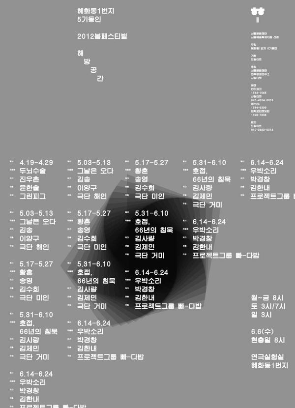

진우촌 작, 윤한솔 연출

한 저명한 의사가 반편이로 태어난 부잣집 아들 상도와 가난하지만 총명한 시골 청년 무길의 두뇌를 맞바꾸는 수술을 한 뒤 벌어지는 소동. 1945년에 쓰인 진우촌의 희곡을 고치지 않은 채, B급 스릴러 같은 연출과 친일가요 합창, '두뇌수술의 유쾌한 결말'을 적은 기사문 등을 덧대 텍스트 자체를 대상화해 바라보게 한다. 윤한솔은 이 접근을 '자가당착적 희극'이라 부른다.
2012.4.19–29 / 연극실험실 혜화동1번지
2012.5.4–20 / 정보소극장
2013.2.27–3.17 / 연극실험실 혜화동1번지 - 대한민국연극대상 작품상 수상 기념
2015.12.11–27 / 연극실험실 혜화동1번지
2019.7.26–8.18 / CJ아지트
2020.8.14–9.6 / 연극실험실 혜화동1번지 - 공연예술창작산실 올해의 레퍼토리
2020.11.2–9 / 안동문화예술의전당 백조홀
2012 제5회 대한민국 연극대상 작품상
작: 진우촌
연출: 윤한솔
조연출: 정유진
의상: 김경희
조명: 우수정
음향: 전민배
무대 제작: 신승렬
기획: 김민경
출연(2019): 권태건, 김청순, 박소연, 신재환, 이동영, 이주형, 이지원, 장수호, 정양아, 정연종, 최문석, 최주연, 최지현
2012 리뷰, 이정만
2012 언론보도 및 리뷰 모음
이전: 〈아무튼백석〉 | 다음: 〈사이코패스〉
아카이브로 돌아가기
최종 수정 2026.11.9